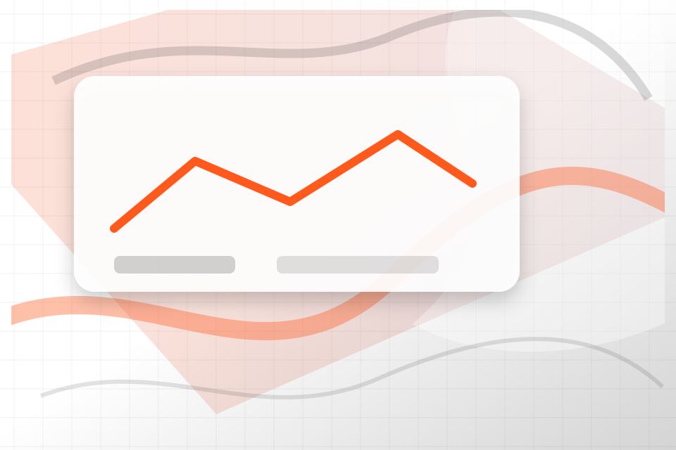
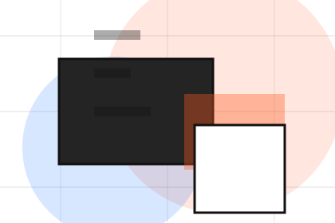
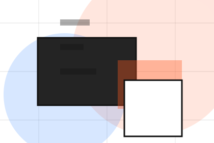
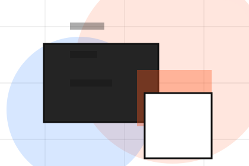
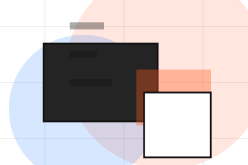
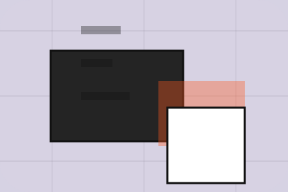

Firm
Open the firm route for expertise, method, values so consulting, strategy & business advisory visitors can compare context, proof, and next steps.
Open FirmHome / 01
Home opens as a clear consulting decision hub: what Vector offers, who it helps, why it matters, and which route to take first.
The first screen combines positioning, proof, primary action, and fast internal navigation, so people can act immediately or compare the rest of the home route with context.
Idea-led editorial hero
Select the closest route and Vector keeps the next step, proof, and follow-up expectation aligned with clarity, leverage and measurable progress.

Site atlas
This homepage is the working index for consulting, strategy & business advisory: it explains the offer, points to every deeper page, and keeps the final action visible without making the visitor hunt.
A strategy studio site with large editorial type, idea-led modules, mosaic proof, and workshop conversion. The page links problem, promise, services, process, proof, questions, support, legal routes, and conversion paths into one clear decision map.
Open the firm route for expertise, method, values so consulting, strategy & business advisory visitors can compare context, proof, and next steps.
Open FirmOpen the services route for advisory, strategy, operations so consulting, strategy & business advisory visitors can compare context, proof, and next steps.
Open ServicesOpen the strategy route for market, positioning, priorities so consulting, strategy & business advisory visitors can compare context, proof, and next steps.
Open StrategyOpen the process route for diagnose, analyse, design so consulting, strategy & business advisory visitors can compare context, proof, and next steps.
Open ProcessOpen the results route for revenue, efficiency, clarity so consulting, strategy & business advisory visitors can compare context, proof, and next steps.
Open ResultsOpen the pricing route for workshops, projects, retainers so consulting, strategy & business advisory visitors can compare context, proof, and next steps.
Open PricingOpen the insights route for frameworks, reports, trends so consulting, strategy & business advisory visitors can compare context, proof, and next steps.
Open InsightsOpen the cases route for problem, context, approach so consulting, strategy & business advisory visitors can compare context, proof, and next steps.
Open CasesOpen the contact route for brief, call, budget so consulting, strategy & business advisory visitors can compare context, proof, and next steps.
Open ContactReview the local assets, icons, OG images, and static handoff materials used by Vector.
Open Asset SystemUse the full sitemap to recover any route and verify the whole Vector structure.
Open SitemapRead the privacy route before sending personal details through the static form.
Open PrivacyManage consent and understand the privacy-safe analytics approach.
Open CookiesHome / 02
Challenge frames the pressure behind the visit, then connects it to a practical path visitors can recognise and act on.
The copy avoids blame and panic. It shows the common friction, the practical consequence, and the calmer route Vector uses to move people forward.
Open FirmChallenge names the real friction visitors bring to the home route, so the page feels relevant before any claim is made.
The copy connects that friction to practical risk, delay, confusion, or missed opportunity without exaggerating it.
The final cue moves visitors toward a clearer route instead of leaving them with the problem alone.
Home / 03
Gap adds professional context to the home route, using the editorial innovation studio structure to support clarity, leverage and measurable progress before visitors choose a next step.
Vector uses case thinking cards and focused copy to make the decision easier to scan, aligning the section with clarity, leverage and measurable progress rather than filling space.
Open ServicesVector structures gap around context, judgment, and a clear next route so visitors can compare the block quickly before they send a brief.
Send BriefHome / 05
Services explains the practical scope, best-fit situations, and expected outcome so consulting visitors can compare options without decoding jargon.
The section keeps the offer concrete: what is included, who it is best for, what decision it supports, and which linked route gives the deeper detail.
Open ServicesWho should use services and when it belongs in the home journey.
The practical benefit visitors should expect after choosing this route.

Where to compare details, pricing, support, or contact options before committing.
Idea-led editorial hero
Select the closest route and Vector keeps the next step, proof, and follow-up expectation aligned with clarity, leverage and measurable progress.
Home / 07
Results shows what changes after the work: clearer decisions, visible progress, and proof points that connect the offer to real outcomes.
The layout connects before-and-after thinking with measured outcomes, making the result easy to scan without promising what the business cannot guarantee.
Open ResultsThe uncertainty, delay, or missed opportunity visitors bring into results.
The clearer, safer, or more valuable state Vector is designed to support.
The visible cue that connects results to a believable decision, not a loose claim.
Home / 08
Trust gives the proof layer for home: standards, evidence, and reassurance that make the next decision feel grounded.
Instead of relying on vague claims, Vector presents visible standards, process cues, and proof artifacts that help consulting visitors judge fit.
Open InsightsVector structures trust around evidence, standard, and a clear next route so visitors can compare the block quickly before they send a brief.
Send BriefHome / 09
Questions handles buying doubts directly so visitors can understand timing, fit, limits, and the safest next step.
Answers are short by design: enough to remove hesitation, not so much that the page turns into documentation before the visitor can act.
Open Contact
Questions gives the page a specific angle instead of repeating the navigation label.

The case thinking cards show what to compare, what to avoid, and what matters most for consulting, strategy & business advisory visitors.

The final cue points to a useful internal route so the section keeps the journey moving.
Vector starts with a focused intake so the recommendation matches the visitor's context, risk, timing, and readiness.
Each route explains inclusions, exclusions, documents, timing, and the decision points that affect final delivery.
The theme uses editorial innovation studio, case thinking cards, and diagnostic quiz, framework tabs, case filter rather than a shared template rhythm.
Idea-led editorial hero
Select the closest route and Vector keeps the next step, proof, and follow-up expectation aligned with clarity, leverage and measurable progress.
Information is provided for planning and should be reviewed for the final client, location, and operating rules.
Home / 10
Vector closes the home route with a clear action, a quick reminder of the value, and a low-friction way to send a brief.
Visitors who are ready can use the primary action. Visitors who are still comparing can scan the section links, proof, and support routes before they send a brief.
Send BriefThe final block keeps the choice simple: act now, compare one more proof route, or send enough detail for a focused response.
Send Briefclarity, leverage and measurable progress
A strategy studio site with large editorial type, idea-led modules, mosaic proof, and workshop conversion. Home ends with a direct path to send a brief, plus enough context for visitors who still need to compare.

Send Brief